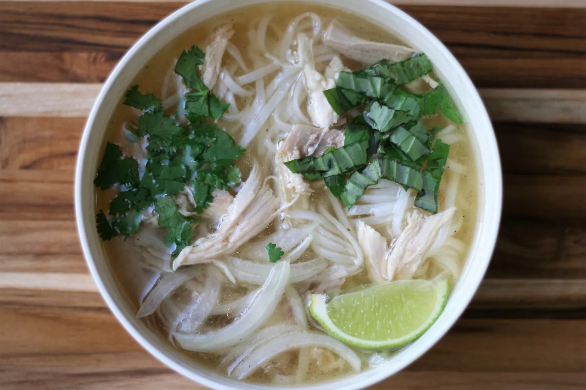

PHO

Description
Experience the magic of one of the greatest noodle soups in the world with this easy to follow traditional Vietnamese Pho recipe!
Ingredients
- Water
- Salt and pepper
- Beef
- Noodles
- Spring Onions
Steps
- Cook the beef in the water to make the broth
- Season the broof to your liking
- Take the beef out and cut it into slices
- Add the noodles into the boiling broth
- Serve the broof with the noodles and top it with the chopped spring onions and beef slices